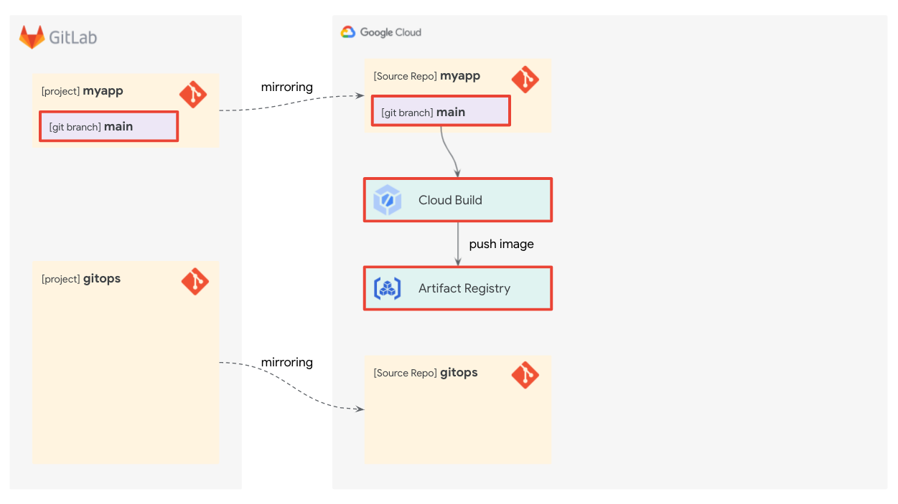

前提条件
ラボを開始する前に以下のものをあらかじめ準備してください。
- Google Cloud アカウント
- ラボ用の Google Cloud プロジェクト
- 有効な請求先アカウントに紐付いていることを確認してください
- ラボで作成したリソースをクリーンアップしやすいように新規プロジェクトの利用をおすすめします
- Cloud Shell
- このラボでは Cloud Shell での操作を前提にしています
- Cloud Shell 以外で操作する場合は下記の指示に従ってください
- GitLab.com アカウント
- Cloud Shell 等の操作する端末でSSH 接続の設定をしておいてください
Cloud Shell 以外での操作
Cloud Shell 以外で操作する場合は次のツールをインストールしてください。
- Cloud SDK (
gcloudコマンド) - Git コマンド
また、ラボで使用する Cloud SDK コンポーネントをインストールしてください。
gcloud components install beta kubectl nomos
このラボでは複数の Kubernetes クラスタを GitOps で管理するためのパイプラインを構築します。 マニフェストの YAML を管理するための Git リポジトリとして GitLab.com を利用します。 また、Anthos Config Management の Config Sync を使って Git リポジトリで管理されているマニフェストを各クラスタに同期します。

このセクションでは、このラボで構築するパイプラインについて説明します。
全体アーキテクチャ
全体のアーキテクチャは次の図のようになります。 各コンポーネントの詳細はそれぞれ構築時に説明します。
ここでは各コンポーネントについて簡単に説明します。
- GitLab.com
- GitLab 社が提供する Git のホストが可能な DevOps プラットフォームです。
- このラボでは、アプリケーションの管理用に myapp プロジェクト、Kubernetes マニフェストの管理用に gitops プロジェクトをそれぞれ作成します。
- Cloud Source Repository
- Google Cloud が提供する Git ホスティングサービスです。
- GitLab の Git リポジトリをミラーリングして Google Cloud との連携に利用します。
- Cloud Build
- Google Cloud が提供するサーバーレス CI/CD プラットフォームです。
- myapp プロジェクトが更新されると、最新のコンテナイメージをビルド・プッシュします。さらに、最新のイメージを利用した Kubernetes のマニフェスト YAML を gitops リポジトリの新しいブランチにプッシュします。
- Artifact Registry
- Google Cloud が提供するビルドアーティファクト管理サービスです。
- Cloud Build がビルドしたコンテナイメージを管理します。
- Google Kubernetes Engine (GKE)
- Google Cloud が提供するマネージド Kubernetes プラットフォームです。
- このラボでは管理対象のクラスタを 3 つ作成します。そのうち 2 つは本番環境用クラスタで gitops プロジェクトの
prdブランチと同期します。残りの 1 つは開発環境用クラスタで gitops プロジェクトのstgブランチと同期します。
- Anthos Config Management (ACM)
- Google Cloud が提供する、1 つ以上の Kubernetes クラスタの構成とポリシーを一元管理するためのサービスです。
- Config Sync
- ACM の主要コンポーネントの 1 つです。Config Sync を利用すると、Kubernetes クラスタの構成やポリシーを Git リポジトリで一元管理できます。
デプロイ ワークフロー
上記アーキテクチャにおいて、開発・テスト・デプロイをどのようなワークフローで実現するかを説明します。 次の図では、myapp というアプリの開発からデプロイまでのワークフローを表しています。

このラボでは開発チームと運用チームという 2 つのチームを想定しています。開発チームは myapp アプリケーションの開発を担当し、運用チームは品質保証 (QA) テストを実施したり本番環境を変更したりします。
ワークフローの流れはこのようになります。
- 開発チームは myapp プロジェクトで開発する
- 開発者はデプロイしたいとき、myapp プロジェクトの
mainブランチを更新する - myapp プロジェクトの
mainブランチが更新されたとき、Cloud Build により gitops プロジェクトに新しいブランチがプッシュされる。そのブランチには最新の Kubernetes マニフェストが含まれる。 - 開発者は gitops プロジェクトで自動生成されたブランチから
stgブランチに対する Merge Request を作成して運用チームに QA (品質保証) テストを依頼する - QA 担当者はステージング環境の準備ができていれば Merge Request を承認してマージする
- Config Sync により
stgブランチのマニフェストがステージング環境の Kubernetes クラスタに同期される - QA 担当者はステージング環境で品質保証テストを実施して、OK であれば
prdブランチに対して Merge Request を作成する - 管理者は Merge Request を確認し、本番環境への適用が認められた場合に承認してマージする
- Config Sync により
prdブランチのマニフェストが本番環境の Kubernetes クラスタに同期される
Cloud Shell を開いてください。
使用するプロジェクトを設定してください。
gcloud config set project YOUR-PROJECT-ID
利用するサービスの API を有効化してください。
gcloud services enable \ anthos.googleapis.com \ artifactregistry.googleapis.com \ cloudbuild.googleapis.com \ container.googleapis.com \ gkehub.googleapis.com \ secretmanager.googleapis.com \ sourcerepo.googleapis.com
このセクションでは GitLab.com で myapp プロジェクトと gitops プロジェクトを作成します。 また、Cloud Source Repositories でも 2 つの Git リポジトリを作成して、GitLab とのミラーリングを設定します。

GitLab Group の作成
このラボ用の GitLab Group を作成します。
こちらにアクセスしてください。 適当な Group name を入力してCreate groupをクリックして、Group を作成してください。

Group URL に設定した値を環境変数に設定してください。Group の URL としても利用されている ID です。

export GITLAB_GROUP="your-group"
GitLab Project の作成
作成した Group に Project を 2 つ作成します。
New Project をクリックしてください。
Create blank project をクリックしてください。
Project name と Project slug に myapp と入力して Create Project ボタンをクリックしてください。

同様にして gitops Project を作成してください。
Cloud Source Repositories の作成
Cloud Source Repositories で myapp と gitops リポジトリを作成して、GitLab からのミラーリングを設定するための認証情報を取得します。
myapp リポジトリと gitops リポジトリを作成してください。
gcloud source repos create myapp gcloud source repos create gitops
Cloud Source Repositoriesにアクセスしてください。
作成した myapp をクリックしてください。

手動で生成した認証情報タブの**Git 認証情報を生成して保存します。**をクリックしてください。

Google Cloud で利用しているアカウントを選択して、Google Cloud Development からの権限リクエストを許可してください。 Configure Gitというページが表示されます。ハイライトされた部分をコピーしてください。
コピーした内容を Cloud Shell にペーストして実行してください。
以下のコマンドを実行してください。最後に表示される URL と Password を GitLab で利用します。
csr_pass=$(grep 'source.developers.google.com' ~/.gitcookies | tail -1 | cut -d= -f2)
csr_user=$(grep 'source.developers.google.com' ~/.gitcookies | tail -1 | \
cut -d$'\t' -f7 | cut -d= -f1)
myapp_repo=$(gcloud source repos describe myapp --format="value(url)")
gitops_repo=$(gcloud source repos describe gitops --format="value(url)")
cat <<EOF
======== Mirroring Credentials for myapp ========
URL: $(echo $myapp_repo | sed "s/:\/\//:\/\/${csr_user}@/")
Password: $csr_pass
======== Mirroring Credentials for gitops =======
URL: $(echo $gitops_repo | sed "s/:\/\//:\/\/${csr_user}@/")
Password: $csr_pass
=================================================
EOF
ミラーリングの設定
GitLab のリポジトリから Cloud Source Repositories のリポジトリへのミラーリングを設定します。
GitLab の myapp リポジトリのメニューから Settings をクリックして Repository をクリックしてください。
Mirroring repositories セクションの Expand ボタンをクリックしてください。 Cloud Shell で表示された myapp の URL と Password を入力して Mirror repository ボタンをクリックしてください。
同様に gitops リポジトリもミラーリングを設定してください。
このセクションでは Cloud Build を使ってコンテナイメージのビルド・プッシュを自動化します。 また、コンテナとしてデプロイするアプリケーションを作成して myapp リポジトリにコミットします。

アプリケーションの実装
myapp アプリを実装してコミットします。
環境変数 GITLAB_GROUP に作成した GitLab の Group 名が格納されていることを確認してください。
echo $GITLAB_GROUP
GitLab の myapp リポジトリを Cloud Shell にクローンしてください。
git clone ssh://git@gitlab.com/$GITLAB_GROUP/myapp ~/workshop/gitops/myapp cd ~/workshop/gitops/myapp
次のコマンドで Cloud Shell Editor を開いてください。
cloudshell workspace .
File メニューの New File をクリックしてください。

main.py と入力して OK をクリックしてください。

次のソースコードをコピーして Cloud Shell Editor で main.py にペーストしてください。
from flask import Flask
app = Flask(__name__)
@app.route('/')
def home():
return '<h1>Hello, world!</h1>'
if __name__ == '__main__':
app.run(debug=False, host='0.0.0.0', port='5000')
同様にして、Dockerfile というファイルを作成してください。 次のコードをコピーして Dockerfile にペーストしてください。
FROM python:3-slim-buster RUN pip install --no-cache-dir flask COPY main.py /main.py CMD ["python", "/main.py"]
Cloud Shell 上で動作確認を行います。 右上のターミナルを開く ボタンをクリックしてください。
Docker イメージをビルドしてください。
docker build -t myapp .
ビルドしたイメージを元にコンテナを実行してください。
docker run -d --rm -p 5000:5000 --name myapp myapp
実行したコンテナにリクエストしてください。 正常なレスポンスが返ってきたら成功です。
curl localhost:5000
動作確認ができたので、コンテナを終了してください。
docker kill myapp
ここまでの変更をコミットしてください。
git checkout -b main git add . git commit -m "Implement myapp application"
Artifact Registry の準備
myapp アプリケーションのコンテナイメージを管理するための Artifact Registry のリポジトリを作成します。
次のコマンドで作成してください。
gcloud artifacts repositories create myapp \ --repository-format docker \ --location asia-northeast1
Cloud Build の設定
myapp の Git リポジトリに変更があったとき、myapp アプリケーションの Docker イメージをビルドして Artifact Registry にプッシュするように Cloud Build を設定します。
Cloud Build にトリガーを作成してください。
gcloud beta builds triggers create cloud-source-repositories \ --name myapp-trigger \ --repo myapp \ --branch-pattern main \ --build-config cloudbuild.yaml
main ブランチに変更があると cloudbuild.yaml に従ってビルドを実行するトリガーが作成されました。
次のコマンドで cloudbuild.yaml を作成してください。
cat <<'EOF' > ~/workshop/gitops/myapp/cloudbuild.yaml
steps:
- name: 'gcr.io/cloud-builders/docker'
args: [
'build',
'-t', 'asia-northeast1-docker.pkg.dev/$PROJECT_ID/myapp/myapp:$COMMIT_SHA',
'.'
]
images:
- 'asia-northeast1-docker.pkg.dev/$PROJECT_ID/myapp/myapp:$COMMIT_SHA'
EOF
変更をコミットしてプッシュしてください。
git add . git commit -m "Add cloudbuild.yaml" git push -u origin main
確認
myapp アプリケーションのコンテナイメージが Cloud Build でビルドされて Artifact Registry にプッシュされているかを確認します。
次のコマンドを実行してください。
gcloud artifacts docker images list \ asia-northeast1-docker.pkg.dev/$(gcloud config get-value project)/myapp/myapp
次のように表示されれば myapp アプリケーションのコンテナイメージをビルドするパイプラインは正常に動作しています。
IMAGE: asia-northeast1-docker.pkg.dev/shawn-gitops/myapp/myapp DIGEST: sha256:680adf0512b424c0c8d34ed006fdf34f9bd1786605b450ed4fe797eccde9b996 CREATE_TIME: 2021-10-19T07:52:05 UPDATE_TIME: 2021-10-19T07:52:05
このセクションでは 3 つの Google Kubernetes Engine クラスタを作成して Config Sync を設定します。

GKE クラスタの作成
3 つの GKE クラスタを作成します。
東京リージョンの本番用クラスタ prd-asia-northeast1 を作成してください。
gcloud container clusters create prd-asia-northeast1 \ --enable-ip-alias \ --machine-type e2-standard-2 \ --num-nodes 1 \ --workload-pool=$(gcloud config get-value project).svc.id.goog \ --region asia-northeast1
アイオワリージョンの本番用クラスタ prd-us-central1 を作成してください。
gcloud container clusters create prd-us-central1 \ --enable-ip-alias \ --machine-type e2-standard-2 \ --num-nodes 1 \ --workload-pool=$(gcloud config get-value project).svc.id.goog \ --region us-central1
東京リージョンのステージング用クラスタ stg を作成してください。
gcloud container clusters create stg \ --enable-ip-alias \ --machine-type e2-standard-2 \ --num-nodes 1 \ --workload-pool=$(gcloud config get-value project).svc.id.goog \ --region asia-northeast1
クラスタのフリートへの登録
作成したクラスタをフリートへ登録します。フリートへ登録することで Anthos Config Management が利用できるようになります。
次のコマンドで 3 つのクラスタをフリートへ登録してください。
gcloud beta container hub memberships register prd-asia-northeast1 \ --gke-cluster asia-northeast1/prd-asia-northeast1 \ --enable-workload-identity gcloud beta container hub memberships register prd-us-central1 \ --gke-cluster us-central1/prd-us-central1 \ --enable-workload-identity gcloud beta container hub memberships register stg \ --gke-cluster asia-northeast1/stg \ --enable-workload-identity
Anthos Config Management の有効化
Anthos Config Management (ACM) を有効化して、Cloud Source Repositories の Git リポジトリにアクセスするための Service Account を設定します。
Anthos Config Management を有効化してください。
gcloud beta container hub config-management enable
Cloud Source Repositories へアクセスするための Service Account を作成します。 ACM の Kubernetes Service Account とは Workload Identity によってこの Google Service Account と紐付けます。
gcloud iam service-accounts create acm-root-reconciler
作成した Service Account に Cloud Source Repository の読み取り権限を付与します。
gcloud projects add-iam-policy-binding \ $(gcloud config get-value project) \ --member serviceAccount:acm-root-reconciler@$(gcloud config get-value project).iam.gserviceaccount.com \ --role roles/source.reader
ACM の Kubernetes Service Account (config-management-system/root-reconciler)に作成した Google Service Account を Workload Identity で利用する権限を付与します。
gcloud iam service-accounts add-iam-policy-binding \
acm-root-reconciler@$(gcloud config get-value project).iam.gserviceaccount.com \
--member "serviceAccount:$(gcloud config get-value project).svc.id.goog[config-management-system/root-reconciler]" \
--role roles/iam.workloadIdentityUser
Config Sync の設定
本番環境、ステージング環境それぞれに Config Sync を設定します。
このラボでは設定ファイルをgitopsリポジトリで管理します。 gitopsリポジトリをクローンしてください。
git clone ssh://git@gitlab.com/$GITLAB_GROUP/gitops ~/workshop/gitops/gitops cd ~/workshop/gitops/gitops
本番環境用の ACM 設定ファイルを作成してください。
cat <<EOF > prd-apply-spec.yaml
applySpecVersion: 1
spec:
configSync:
enabled: true
syncRepo: https://source.developers.google.com/p/$(gcloud config get-value project)/r/gitops
syncBranch: prd
secretType: gcpserviceaccount
gcpServiceAccountEmail: acm-root-reconciler@$(gcloud config get-value project).iam.gserviceaccount.com
EOF
ステージング環境用の ACM 設定ファイルを作成してください。
cat <<EOF > stg-apply-spec.yaml
applySpecVersion: 1
spec:
configSync:
enabled: true
syncRepo: https://source.developers.google.com/p/$(gcloud config get-value project)/r/gitops
syncBranch: stg
secretType: gcpserviceaccount
gcpServiceAccountEmail: acm-root-reconciler@$(gcloud config get-value project).iam.gserviceaccount.com
EOF
本番環境の GKE クラスタ 2 つに ACM の設定を適用してください。
gcloud beta container hub config-management apply \ --membership prd-asia-northeast1 \ --config prd-apply-spec.yaml gcloud beta container hub config-management apply \ --membership prd-us-central1 \ --config prd-apply-spec.yaml
ステージング環境の GKE クラスタに ACM の設定を適用してください。
gcloud beta container hub config-management apply \ --membership stg \ --config stg-apply-spec.yaml
ここまでの変更をコミットしておきます。
git checkout -b main git add . git commit -m "Configure ACM" git push -u origin main
このセクションでは myapp アプリケーションのデプロイ先となる Kubernetes の Namespace myapp の YAML ファイルを作成します。 また、そのファイルを gitops リポジトリに stg ブランチとしてプッシュして、Config Sync でクラスタに同期します。
Config Sync 構成の初期化
このラボでは Config Sync の階層リポジトリを使ってマニフェストファイルを管理します。
gitops リポジトリを次のコマンドで初期化してください。
cd ~/workshop/gitops/gitops nomos init --force
次のようなファイルとディレクトリが作成されます。
$ tree
.
├── cluster
├── clusterregistry
├── namespaces
├── prd-apply-spec.yaml
├── README.md
├── stg-apply-spec.yaml
└── system
├── README.md
└── repo.yaml
4 directories, 5 files
この変更をコミットしてください。
git add . git commit -m "nomos init"
namespace マニフェストの作成
myapp Namespace のマニフェストファイルを作成してコミットします。
myapp Namespace 用のディレクトリを作成してください。今後、myapp Namespace に属するリソースのマニフェストはこのディレクトリへ格納することになります。
mkdir -p namespaces/myapp
Namespace の YAML を作成してください。
cat <<EOF > namespaces/myapp/namespace.yaml apiVersion: v1 kind: Namespace metadata: name: myapp EOF
コミットしてプッシュしてください。
git add . git commit -m "Create myapp Namespace" git push
stg ブランチの作成
現段階では gitops リポジトリに main ブランチしかないため GKE クラスタには同期されません。 ステージング環境用クラスタの Config Sync 同期元である stg ブランチを作成して、myapp Namespace が作成されることを確認します。
まず現在の Config Sync の状態を確認してください。
gcloud beta container hub config-management status
3 つのクラスタすべて Status: ERROR または Status: PENDING となっています。 エラーメッセージには、次のように同期元の Git ブランチがないという記述があります。
fatal: Remote branch prd not found in upstream origin
stgブランチを作成してプッシュします。
git branch -c stg git push origin stg
Config Sync の状態を確認してください。
gcloud beta container hub config-management status
stg クラスタが Status: SYNCED となっていれば、stg ブランチとの同期が成功しています。
実際にmyapp Namespace が作成されているか確認してください。
gcloud container clusters get-credentials stg \ --region asia-northeast1 kubectl describe namespace myapp
このとき、Label や Annotation に Config Management のプロパティが含まれていることも確認してください。 例えば、app.kubernetes.io/managed-by=configmanagement.gke.ioというラベルを見ることで Config Management によって管理されているリソースであることを確認できます。
このセクションでは myapp アプリケーションの CI/CD を実現するために、myappリポジトリの変更を反映したマニフェストファイルを自動でgitopsリポジトリにプッシュするパイプラインを構築します。

パイプラインの流れは次のようになります。
myappリポジトリのmainブランチが更新される- (Cloud Source Repositories へミラーリングされる)
- Cloud Build がトリガーされる
- Cloud Build は以下のタスクを実行する
- 最新の
myappリポジトリのmainブランチを使用してコンテナイメージをビルド・プッシュする - ビルドされた最新のコンテナイメージを利用した Deployment の YAML ファイルを生成する
- 生成した YAML ファイルを
myapp-$COMMIT_SHAという新しいブランチでgitopsリポジトリにプッシュする
- 最新の
デプロイキーを作成する
このラボでは Cloud Build から GitLab へアクセスするためにデプロイキーを利用します。 また、Cloud Build から安全に秘密鍵を扱うためにSecret Managerを利用します。
デプロイキーを作成してください。
ssh-keygen -t ed25519 -N '' -f ~/workshop/gitops/deploy_key
作成した秘密鍵を Secret Manager に登録してください。
cat ~/workshop/gitops/deploy_key | gcloud secrets create deploy-key --data-file=-
Cloud Build が Secret Manager から秘密鍵を取得できるように権限を付与してください。
gcloud secrets add-iam-policy-binding \ deploy-key \ --member serviceAccount:$(gcloud projects describe $(gcloud config get-value project) --format 'value(projectNumber)')@cloudbuild.gserviceaccount.com \ --role roles/secretmanager.secretAccessor
GitLab へのデプロイキーの設定
GitLab の gitops リポジトリに作成したデプロイキーの公開鍵を登録します。 これにより、Cloud Build から gitops リポジトリへアクセスできるようになります。
作成した公開鍵の内容を表示してコピーしてください。
cat ~/workshop/gitops/deploy_key.pub
GitLab の gitops プロジェクトを開いてください。 左のメニューから Settings の Repository を開いてください。

Deploy keys を開き、Key にコピーした公開鍵をペーストしてください。 Grant write permissions to this key にチェックを入れて Add key をクリックしてください。

myapp マニフェスト作成
myapp アプリを Kubernetes 上にデプロイするためのマニフェスト YAML を用意します。 このラボでは GKE 上でアプリケーションを公開するために Deployment、Service、Ingress のリソースを作成します。 Namespace は前のセクションで準備した myapp Namespace を利用します。
Deployment にはコンテナイメージを変数としたテンプレートを用意します。 Cloud Build では myapp リポジトリが更新されると最新コミットを元にイメージをビルド・プッシュして、そのイメージタグをテンプレートに埋め込んだ YAML を gitops リポジトリへコミットすることになります。
myapp リポジトリに移動してください。
cd ~/workshop/gitops/myapp
kubernetes ディレクトリを作成してください。
mkdir ~/workshop/gitops/myapp/kubernetes
Deployment の元になるテンプレートを作成してください。
cat <<'EOF' > ~/workshop/gitops/myapp/kubernetes/deployment.yaml.tpl
apiVersion: apps/v1
kind: Deployment
metadata:
namespace: myapp
name: myapp
labels:
app: myapp
spec:
replicas: 1
selector:
matchLabels:
app: myapp
template:
metadata:
labels:
app: myapp
spec:
containers:
- name: myapp
image: $IMAGE_TAG
ports:
- containerPort: 5000
EOF
下から 3 行目の image: $IMAGE_TAG がコンテナイメージの変数になります。
Service の YAML を作成してください。
cat <<EOF > ~/workshop/gitops/myapp/kubernetes/service.yaml
apiVersion: v1
kind: Service
metadata:
namespace: myapp
name: myapp
spec:
type: ClusterIP
selector:
app: myapp
ports:
- protocol: TCP
port: 5000
targetPort: 5000
EOF
Ingress の YAML を作成してください。
cat <<EOF > ~/workshop/gitops/myapp/kubernetes/ingress.yaml
apiVersion: networking.k8s.io/v1
kind: Ingress
metadata:
namespace: myapp
name: myapp
spec:
defaultBackend:
service:
name: myapp
port:
number: 5000
EOF
Cloud Build の設定
マニフェスト YAML を gitops リポジトリにコミットするスクリプトを作成して、Cloud Build でそのスクリプトを実行するように設定します。
GitLab Group が変数に格納されていることを確認してください。
echo $GITLAB_GROUP
次のコマンドでスクリプトを作成してください。
cat <<EOF > ~/workshop/gitops/myapp/deploy.sh
#!/bin/bash
gitlab_group=$GITLAB_GROUP
EOF
cat <<'EOF' >> ~/workshop/gitops/myapp/deploy.sh
app_repo="gitlab.com/${gitlab_group}/myapp"
ops_repo="gitlab.com/${gitlab_group}/gitops"
image_tag="asia-northeast1-docker.pkg.dev/${PROJECT_ID}/myapp/myapp:${COMMIT_SHA}"
branch="myapp-${COMMIT_SHA}"
commit_url="https://${app_repo}/-/commit/${COMMIT_SHA}"
# マニフェスト テンプレートをレンダリングするために envsubst をインストール
apt-get update
apt-get install --no-install-recommends -y gettext-base
# gitops リポジトリにアクセスするために必要なSSHの設定
# Secret Managerから取得したデプロイキーの秘密鍵は Cloud Build の設定で
# MANIFEST_DEPLOY_KEY 変数に格納される
mkdir /root/.ssh
echo "${MANIFEST_DEPLOY_KEY}" > /root/.ssh/id_ed25519
cat <<CONFIG > /root/.ssh/config
HOST *
StrictHostKeyChecking no
UserKnownHostsFile=/dev/null
CONFIG
chmod 400 /root/.ssh/{id_ed25519,config}
chmod 700 /root/.ssh
# gitops リポジトリを gitops ディレクトリにクローン
git clone ssh://git@${ops_repo} gitops
# マニフェスト YAML を gitops リポジトリの namespaces/myapp ディレクトリにコピー
for f in $(ls kubernetes/*.yaml); do
cp $f gitops/namespaces/myapp/
done
# マニフェスト テンプレートをレンダリングして
# gitops リポジトリの namespaces/myapp ディレクトリに格納
export IMAGE_TAG="${image_tag}"
for f in $(ls kubernetes/*.yaml.tpl); do
< $f envsubst > gitops/namespaces/myapp/$(basename ${f%.tpl})
done
# マニフェストをコミットして新しいブランチとしてプッシュ
cd gitops
git config user.name "Cloud Build"
git config user.email "cloudbuild@example.com"
git checkout -b ${branch}
git add .
git commit -m "Auto commit by Cloud Build from ${commit_url}"
git push origin ${branch}
EOF
次のコマンドでスクリプトを表示してスクリプトの内容を確認してください。
cat ~/workshop/gitops/myapp/deploy.sh
作成したスクリプトを実行するように cloudbuild.yaml を修正してください。
cat <<'EOF' > ~/workshop/gitops/myapp/cloudbuild.yaml
steps:
- name: 'gcr.io/cloud-builders/docker'
args: [
'build',
'-t', 'asia-northeast1-docker.pkg.dev/$PROJECT_ID/myapp/myapp:$COMMIT_SHA',
'.'
]
- name: 'gcr.io/cloud-builders/git'
entrypoint: 'bash'
args: ['./deploy.sh']
env:
- 'PROJECT_ID=$PROJECT_ID'
- 'COMMIT_SHA=$COMMIT_SHA'
secretEnv:
- 'MANIFEST_DEPLOY_KEY'
images:
- 'asia-northeast1-docker.pkg.dev/$PROJECT_ID/myapp/myapp:$COMMIT_SHA'
availableSecrets:
secretManager:
- versionName: projects/$PROJECT_ID/secrets/deploy-key/versions/latest
env: 'MANIFEST_DEPLOY_KEY'
EOF
変更をコミット
これまでの変更を myapp リポジトリにコミットしてください。
cd ~/workshop/gitops/myapp git add . git commit -m "Add deploy script" git push
このコミットにより、新しい Cloud Build のパイプラインが実行され、GitLab の gitops リポジトリに新しいブランチがプッシュされます。
GitLab で gitops プロジェクトを確認してください。成功すると次のようなメッセージが表示されます。
このセクションでは前のセクションで gitops リポジトリにプッシュされたブランチをマージして、ステージング環境に myapp アプリをデプロイします。
Merge Request の作成
Cloud Build からプッシュされた内容を stg ブランチへマージするための Merge Request を作成します。 Merge Request を利用することにより、コードレビューや承認などのプロセスを簡単に設けることができます。
GitLab の gitops プロジェクトにアクセスして、メニューから Repository、Compare をクリックしてください。 Source として myapp-xxxxx ブランチを、Target として stg ブランチを選択して Compare ボタンをクリックしてください。
Create merge request ボタンをクリックしてください。
適当なタイトルを入力して Create merge request ボタンをクリックしてください。
作成した Merge Request が表示されます。 Changes をクリックしてstg ブランチとの差分を確認してください。 テンプレートで変数としていたコンテナイメージ部分には最新のタグが埋め込まれていることがわかります。
Overview をクリックして Merge ボタンをクリックしてください。

stg ブランチへ変更がマージされ、Config Sync によってステージング環境 (stg クラスタ) に myapp アプリがデプロイされます。
デプロイの確認
実際にデプロイできているかを確認します。
stg クラスタの認証情報を取得してください。
gcloud container clusters get-credentials stg \ --region asia-northeast1
myapp アプリの Deployment が作成されていることをkubectlコマンドで確認してください。
$ kubectl get deployment -n myapp NAME READY UP-TO-DATE AVAILABLE AGE myapp 1/1 1 1 2m40s
同様に Ingress が作成されていることを確認してください。
$ kubectl get ingress -n myapp NAME CLASS HOSTS ADDRESS PORTS AGE myapp <none> * 34.xxx.yyy.zzz 80 12m
次のコマンドで Ingress で作成されたロードバランサーの URL を表示して、ブラウザでアクセスしてください。
echo http://$(kubectl get ingress myapp -n myapp --output 'go-template={{(index .status.loadBalancer.ingress 0).ip}}')
デプロイが成功していると「Hello, world!」というメッセージが表示されます。
このセクションでは myapp アプリを本番環境にデプロイします。 本番環境では 2 つの GKE クラスタに myapp アプリがデプロイされます。
prd ブランチの作成
運用時には本番環境への適用も Merge Request で行いますが、今はまだprdブランチがないのでstgブランチを元に作成します。 Merge Request を使ったワークフローは次のセクションで体験します。
GitLab のgiopsプロジェクトにアクセスして Repository、Branches、New branch をクリックしてください。
Branch name に prd を入力して、Create from に stg を選択して、Create branch をクリックしてください。

prd ブランチが作成されて Config Sync によって prd-asia-northeast1 クラスタと prd-us-central1 クラスタに myapp アプリがデプロイされます。
デプロイの確認
実際にデプロイできているかを確認します。
prd-asia-northeast1 クラスタの認証情報を取得してください。
gcloud container clusters get-credentials \ prd-asia-northeast1 \ --region asia-northeast1
myapp アプリの Deployment が作成されていることをkubectlコマンドで確認してください。
$ kubectl get deployment -n myapp NAME READY UP-TO-DATE AVAILABLE AGE myapp 1/1 1 1 2m40s
同様に Ingress が作成されていることを確認してください。
$ kubectl get ingress -n myapp NAME CLASS HOSTS ADDRESS PORTS AGE myapp <none> * 34.xxx.yyy.zzz 80 12m
次のコマンドで Ingress で作成されたロードバランサーの URL を表示して、ブラウザでアクセスしてください。
echo http://$(kubectl get ingress myapp -n myapp --output 'go-template={{(index .status.loadBalancer.ingress 0).ip}}')
デプロイが成功していると「Hello, world!」というメッセージが表示されます。
同じように prd-us-central1 クラスタについても確認します。 prd-us-central1 クラスタの認証情報を取得して、同様の確認をしてください。
gcloud container clusters get-credentials \ prd-us-central1 \ --region us-central1
gitops の main ブランチの更新
gitops の main ブランチに prd ブランチをマージします。 prdブランチからmainブランチへの Merge Request を作成してください。
このとき必ず Delete source branch when merge request is accepted. のチェックを外して Merge Request を作成してください。 そのまま Merge ボタンをクリックしてマージしてください。
このセクションでは開発者、QA 担当者、管理者になりきって実際のデプロイワークフローを体験します。
開発
まずは開発者としてアプリケーションを改善して、myapp リポジトリに変更をプッシュします。
myappディレクトリに移動してください。
cd ~/workshop/gitops/myapp
Cloud Shell Editor で main.py を開いてください。
cloudshell edit main.py
どの Pod がレスポンスを返したかわかるように次のように修正してください。
import os
from flask import Flask
app = Flask(__name__)
@app.route('/')
def home():
return f'<h1>Hello, world! from {os.getenv("HOSTNAME")}</h1>'
if __name__ == '__main__':
app.run(debug=False, host='0.0.0.0', port='5000')
変更をコミット・プッシュしてください。
git commit -am "Print hostname" git push
GitLab の gitops プロジェクトにアクセスしてください。 上部に表示されている Create merge request をクリックしてください。
Change branches をクリックしてください。
Target branch に stg ブランチを選択して Compare branches and continue ボタンをクリックしてください。

QA チームにわかるように Title や Description を入力して Create merge request ボタンをクリックしてください。
この Merge Request が運用チームへの QA テスト依頼兼ステージングデプロイ依頼となります。 以上で開発者としての作業は終了です。
QA テスト
ここからは QA 担当者として作業します。 作成された Merge Request をレビュー・承認・マージして、ステージング環境で変更を確認します。
GitLab の gitops プロジェクトにアクセスして、左メニューから Merge requests をクリックしてください。 Search or filter results... と表示されているテキストボックスをクリックして、Target-Branch = stg となるように選択肢をクリックしていってください。

次のように開発者が QA チームへの依頼として作成した Merge Request が表示されるのでタイトルをクリックしてください。
 ]
]
Title や Description を確認して Approve ボタンをクリックして、Merge ボタンをクリックしてください。
マージするとステージング環境に新しい myapp アプリがデプロイされるので、ステージング環境にアクセスして動作を確認します。
ステージング環境の URL を確認します。
gcloud container clusters get-credentials stg \
--region asia-northeast1
echo http://$(kubectl get ingress myapp -n myapp --output 'go-template={{(index .status.loadBalancer.ingress 0).ip}}')
ブラウザでアクセスして次のように表示されていればアプリの正常な動作確認は完了です。デプロイに数分ほど時間がかかることがあるので、正しく表示されない場合は少し待って試してください。

ステージング環境での正常な動作が確認できたので、本番環境へのデプロイ準備をします。
GitLab の gitops プロジェクトにアクセスして、左メニューの Repository、Compare をクリックしてください。 Source に stg ブランチを、Target に prd ブランチを選択して Compare をクリックしてください。
Create merge request をクリックしてください。

Title、Description を適当に入力して、Delete source branch when merge request is accepted. のチェックを外して、Create merge request ボタンをクリックしてください。

以上で QA 担当者としての作業は完了になります。
本番デプロイ
最後に、本番環境の管理者として作業します。 本番環境への Merge Request を承認・マージして本番環境へ myapp アプリをデプロイします。
GitLab の gitops プロジェクトにアクセスしてください。 左メニューの Merge requests をクリックして、Target-Branch = prd で本番環境への Merge Request を検索してください。myapp の Merge Request をクリックしてください。
Title や Description を確認して Approve ボタンをクリックして、Merge ボタンをクリックしてください。
Config Sync により、2 つのクラスタに prd ブランチの内容が同期されます。
次のコマンドで 2 つのクラスタの URL を表示して動作確認をしてください。
gcloud container clusters get-credentials \
prd-asia-northeast1 \
--region asia-northeast1
echo http://$(kubectl get ingress myapp -n myapp --output 'go-template={{(index .status.loadBalancer.ingress 0).ip}}')
gcloud container clusters get-credentials \
prd-us-central1 \
--region us-central1
echo http://$(kubectl get ingress myapp -n myapp --output 'go-template={{(index .status.loadBalancer.ingress 0).ip}}')
ステージング環境と同様に次のように表示されていれば本番環境へのデプロイも成功しています。
以上でこのラボは終了です。おつかれさまでした。
作成したリソースのクリーンアップを忘れないようにしてください。 ラボ用のプロジェクトを作成した場合は、プロジェクトごと削除してください。
ナビゲーションメニュー > IAMと管理 > 設定
GitLab のプロジェクトやグループも不要な場合は削除してください。